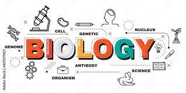

Biology is defined as "The Study of living organisms, divided into many specialized fields that cover the morphology, physiology, anatomy, behavior, origin, and distribution. Throughout the years, Over the years, Biology has evolved and changed in various ways. New discoveries have led to groundbreaking research. The concept of biology as a field came to be in the 19th century, but biological sciences and studies have been around since the beginning of time. Biology is one of the most important subjects that allow us to form the building blocks of everything known to mankind in terms of natural science, chemistry, and physics. "
Biology roots back to around 3000-12000 BCE, where it was used by the Ancient Egyptians and Mesopotamians. These Ancient cultures made key strides in terms of biology through astronomy, mathematics, and medicine. From the 17th-19th centuries, science made huge strides in the study of biology. Microscopy was improved significantly by scientist Leeuwenhoek. This allowed scientists to better carefully observe microorganisms. Charles Darwin introduced the world of biology with the idea of natural selection, a theory still used in the world today. Around the 20th Century, famous scientists such as Mendel and Watson helped us better understand the idea of genetics and DNA. Each discovery forever advanced our understanding. Of human and organismal life.
In current times, biology is used to mainly help us understand the life and genetics of various species and how they evolve, interact within out world. Biology advances every day with new research and advancements. Advances in medicine, biotech and other area of this study has helped improve the quality-of-life Biology provides numerous career paths for people all over the world. Jobs in today’s world include, nurses, physicians, scientists, etc. Biology is everywhere in the world, it is in the past, the present, and will be in the future.
More on the History of Biology